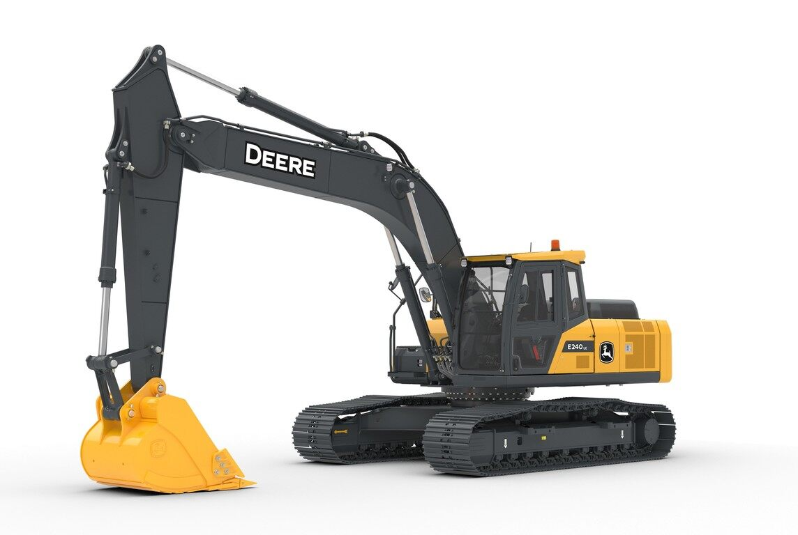
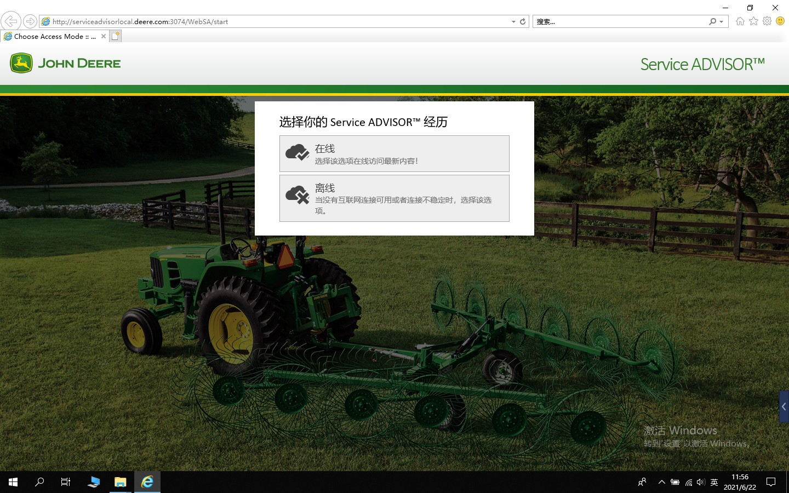
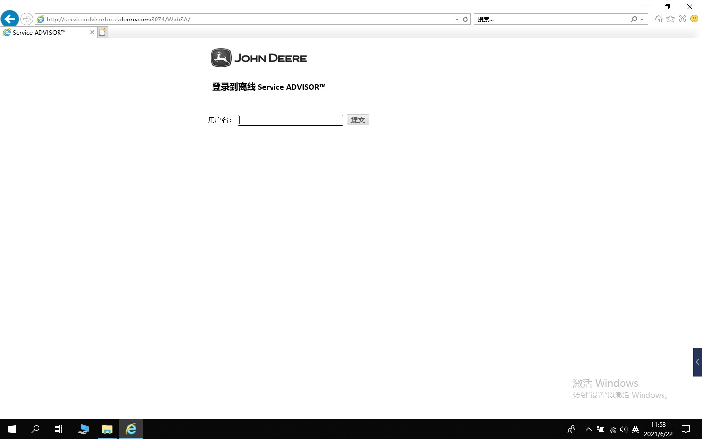
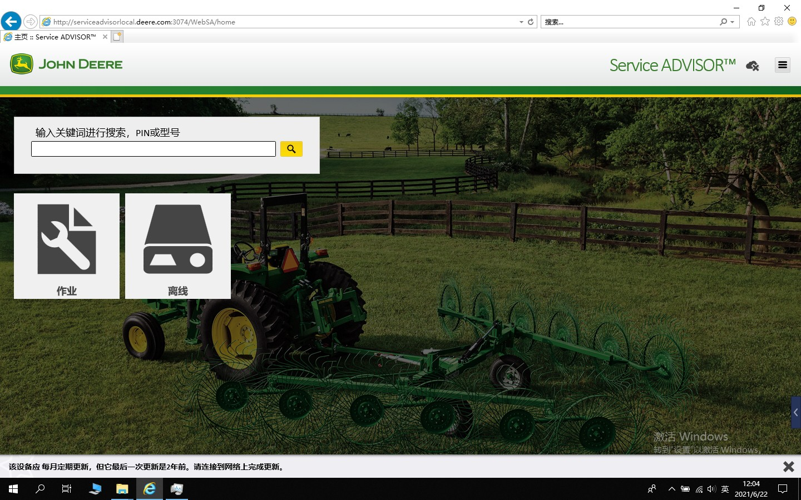
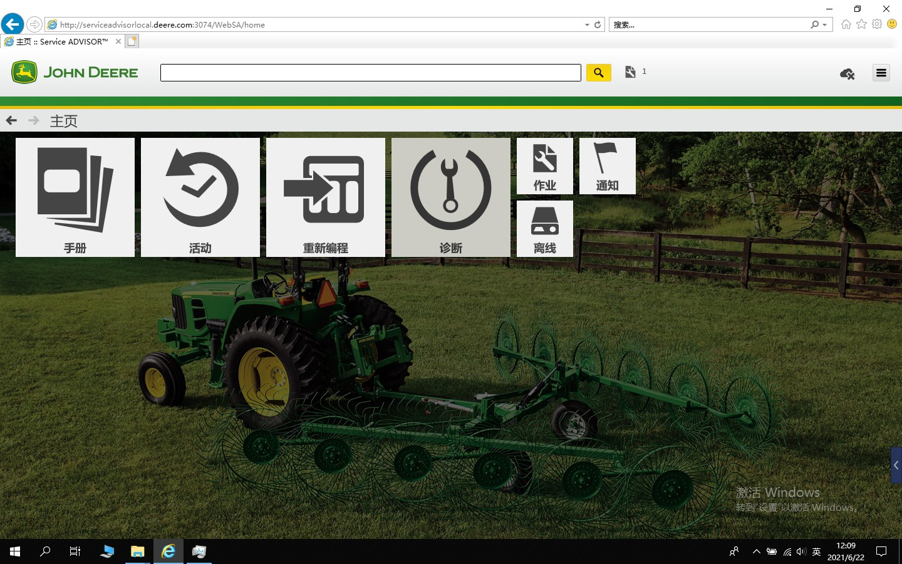
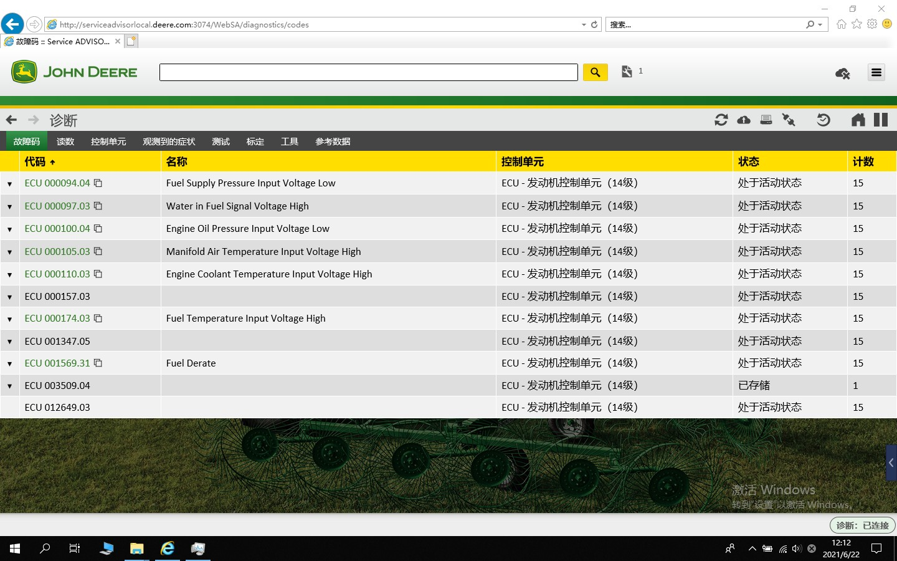
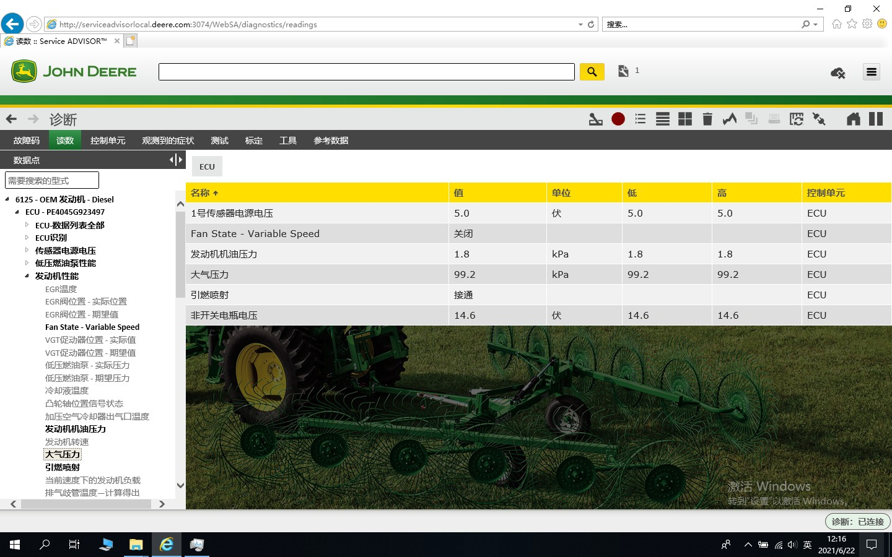
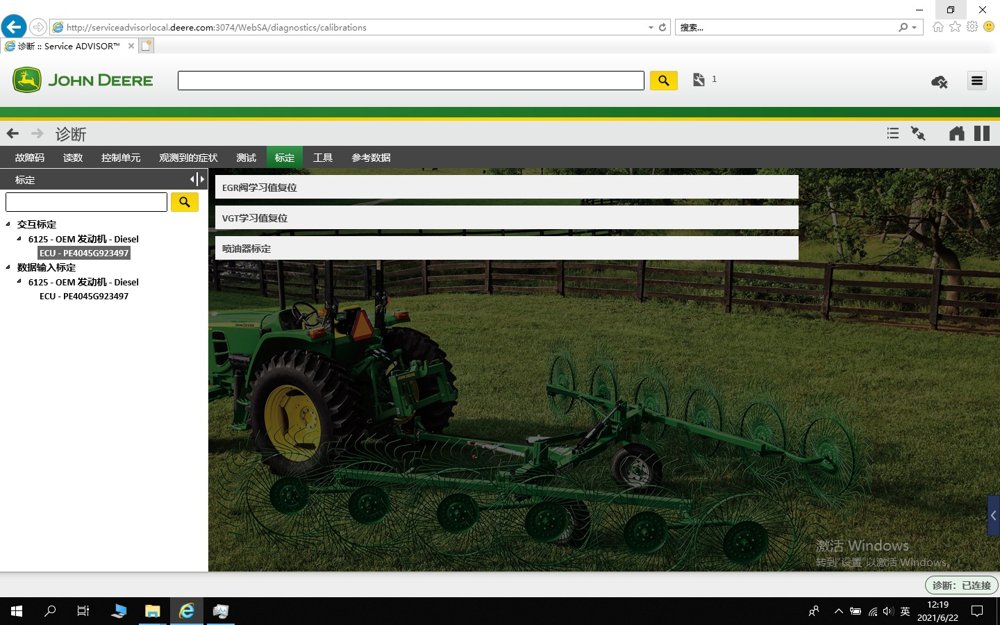
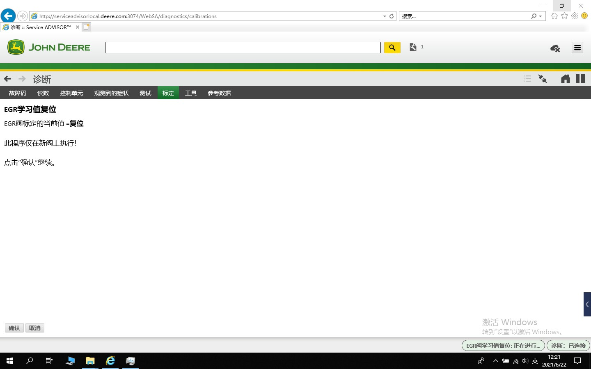
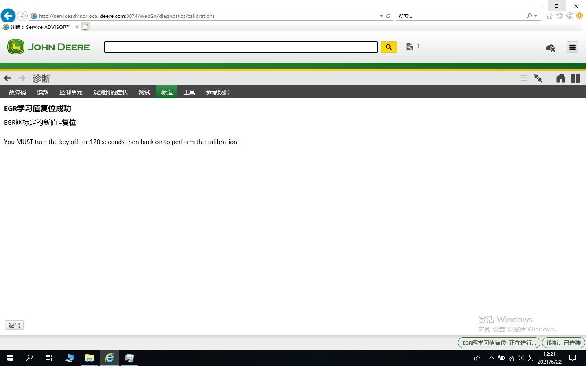

1 Nota
Este artigo apresentaM-Auto M-Auto VCI utilização do dispositivo de diagnósticoSoftware OEM Service ADVISOR para o John Deere JOHN DEERE E240LC realizar diagnóstico na escavadeira。

2 Diagnósticonecessáriorequisitos
2.1 VCI Firmware
VCI Firmwaremustactualizarclassepara v1.6.6.1 ou atualizarVersão。
TransferirFirmware update_v1.6.6.1_nxedl32.exe.zip
2.2 RP1210 Driver
RP1210 Drivermustactualizarclasseto v3.0.210622 ou atualizarVersão。
TransferirDriverrp1210_v3.0.210622_nxedl32.exe.zip
3 DiagnósticoPasso
3.1 AbraSoftware
Abra Service ADVISOR Software，Seleccione [Offline] Modo。

3.2 iniciar sessão
IntroduzaOfflineiniciar sessãoPalavra-passe。

3.3 SeleccioneOperação
Seleccionejá temOperação，ouIniciarumNovoOperação。

3.4 IniciarOperação
Clique em [Operação] EntrarDiagnósticoprincipalpágina。

3.5 Iniciar Diagnóstico
emprincipalpáginacentroClique em [Diagnóstico] Iniciar Diagnóstico。

3.6 LigaçãoDispositivo
Seleccione EDL V1/V2 eClique em [Ligação]。

3.7 código de falha
Ligaçãoapós sucessomostrarlerobtainparacódigo de falhaInformação。

3.8 Dadosfluxo de dados
Clique em [leituras] EntrarDadosfluxo de dadosinterface， lado esquerdoSeleccionenecessárionecessáriolerobtainProjeto。

3.9 Unidade de Controlo
Clique em [Unidade de Controlo] mostrarscanparaUnidade de ControloInformação。

3.10 Calibração
Clique em [Calibração] EntrarCalibraçãointerface。Seleccione [EGRrepor valor de aprendizagem da válvulabit] paraTeste。

Clique em [Confirme] Iniciar EGR repor valor de aprendizagembit。

EGR repor valor de aprendizagembitTesteConcluído。
